ℹ Loading cscp44 🚧 Inspecting the Margin(al)s
Having established that LGCP and CSCP models can exhibit nearly identical second-order structure, we now ask: where do these models differ?
Our first foray into non-first- and second-order statistics begins with the marginal distributions of the latent fields. While the pair correlation function captures second-order dependence, it does not fully characterise the distribution of \(\Lambda(u)\) at a fixed location.
Importantly: although the latent intensity is not directly observed, it still determines the local behaviour of the process, and therefore influences observable quantities such as counts in small regions. The hope is that the differences are large enough that they are able to survive what is becoming increasingly apparent as a total nuclear homogenizing poisson sampling step.
The most obvious way to start investigating the difference is to plot the two processes marginal intensity distributions, for a fixed \((\lambda, \phi)\), and obviously using the best-matching scale parameters (now easily calculatable using the amazing match_lgcp_scale() function).
Note
I don’t know why I thought we needed to vary the scale parameters here. As we will see below, the scale has no effect on the marginal distribution. Reason being: the scale describes the decay of the spatial dependence. The marginal distribution is for a single location, no spatial dependence is involved.
44.1 Recapping
So before we cover the differences in marginal distributions, it is probably a good idea for us to revise what the marginal distributions even are.
So recall, a cox process is defined by it’s random intensity function \(\Lambda(u)\).
Now, this random intensity function is a Random Field, meaning that each location \(u\) over which \(\Lambda\) is defined, is distributed according to the full joint distribution specified by \(\Lambda\).
What does this actually mean though?
Well, \(\Lambda(u)\) is essentially assigning a random distribution to each one of the uncountably infinite number of locations over which it is defined, and the exact distributions being assigned are determined by the functional form and parameters of \(\Lambda\).
In the case of the LGCP (and CSCP), the random field \(\Lambda\), is a special kind of random field called a Gaussian Random Field. This means that if we consider any finite set of locations, say \(\{u_1, u_2, u_3, \dots, u_n\}\), then they will be distributed according to a multivariate normal distribution (with WHAT parameters?).
So you could imagine drawing an infinite number of random distributions, positioned vertically at each location, and transforming them according to whatever functional form \(\Lambda\) takes. This is exactly what \(\Lambda\) represents. An inifite number of possible inhomogeneous intensity surfaces.
Now, what we have described is the full joint-distribution of \(\Lambda\). But, this is a very difficult object to estimate for observed point patterns.
If we want to find differences between two \(\Lambda\)’s, and we can directly observe, or even estimate it well, then perhaps we could look at some properties of the \(\Lambda\)’s, and if the \(\Lambda\)’s we are comparing are sufficiently different, then we might be able to tell them apart (poorly phrased).
One example of this we saw in the last few chapters, where the “property” we were looking at was the PCF, a summary of essentially the covariance between two locations.
This section, we are considering a different “property”, that is the marginal distribution of the \(\Lambda\)’s.
So how exactly are the marginal distributions different than the full joint distribution?
Essentially, we are “accounting for” all possible values of the other locations and taking the correlation of them into account, and “averaging out” the effects due to the correlation / covariance.
The marginal distribution is essentially telling us: in the complete absence of information about any other locations, what would the distribution of the intensity look like at this single point.
In other words: If we repeatedly resampled from just this single point, after resampling the entire surface \(\Lambda\) many times, what would the distribution of the intensity surfaces look like?
44.2 Recap - corrected
So before we cover the differences in marginal distributions, it is probably a good idea for us to revise what the marginal distributions even are.
Recall, a cox process is defined by its random intensity function \(\Lambda(u)\).
This is a function which takes a location \(u\) as an argument, and outputs a random variable, which describes the intensity of the field at that location.
The form \(\Lambda\) takes, is a transformation of some Random Field.
Note that both LGCP and CSCP transform Gaussian random fields. GRFs are random fields such that any finite subset of them will be multivariate-normally distributed.
Now note, \(\Lambda(u)\) determines the full joint distribution of the Cox Process, over all locations. This means (better would be: can be thought of as…) it is essentially responsible for assigning a random variable to each one of the uncountably infinite number of locations over which it is defined, and the exact distributions of these RVs being assigned are determined by the functional form and parameters of \(\Lambda\).
This full joint distribution is a very difficult object to estimate from just observed point patterns.
So if we want to find differences between two \(\Lambda\)’s, and we can’t directly observe, or even estimate them well, then perhaps we could look at some properties of the \(\Lambda\)’s, and if the \(\Lambda\)’s we are comparing are sufficiently different, then we might be able to tell them apart (poorly phrased).
One example of this we saw in the last few chapters, where the “property” we were looking at was the PCF, a summary of essentially the covariance between two locations.
This section, we are considering a different “property”, that is the marginal distribution of the \(\Lambda\)’s.
So how exactly are the marginal distributions different than the full joint distribution?
Essentially, we are “accounting for” all possible values of the other locations and taking the correlation of them into account, and integrating out the dependence on all other locations.
The marginal distribution is essentially telling us: in the complete absence of information about any other locations, what would the distribution of the intensity look like at this single point.
In other words, if we repeatedly simulated the full intensity surface \(\Lambda\), and recorded the value at a fixed location \(u\), the resulting values would follow the marginal distribution of \(\Lambda(u)\).
44.3 Trying to understand what is going on
OK so I’m happy with the idea of what the marginal distribution is.
I’m thinking about it almost as a summary / property of the full distribution. (Is this ok?)
So we want to use this unobservable summary to distinguish between the two processes, in the same way we were trying to use the unobserved true PCFs to distinguish between them.
Note that the way we approached the PCFs, was by esitmating them using minimum contrast, and then basically “hoping” we did a good enough job (turns out we didn’t). So we would now like to do the same thing here. << Robot didn’t like this.
Note
Some thoughts as I process:
The PCF is a summary / property of the joint-distribution, which just so happens to be observable in realized point patterns.
The marginal is NOT reflected in a direct way, in the observable point pattern. So essentially, we will have to use a summary of the marginal of some kind i.e. the quadrat stuff. But then we are essentially trying to ditnguish between two lambdas using a summary of a summary, which seems not good?
Ok trying again:
So we saw previously that using the PCF failed to distinguish between the two processes.
The PCF is just one possible summary of the true full joint distribution, \(\Lambda\). In particular, the PCF is a quantification of how often pairs of points occur at a distance, \(r\). This is useful, as this quantity is a good (clear and interpretable) way of describing what we might think of as “clustering”. Unfortunately however, as we saw, the clustering behaivour alone is not enough (or not able to be estimated accurately enough) to distnguish between the two processes.
So now, we have made the decision to try a different summary of the true full joint distribution, in the marginal distribution, \(\Lambda(u)\). Now, notice there is a big difference in using the marginal as a summary of the true \(\Lambda\), versus the PCF: unlike the PCF, the marginal is NOT directly observable from the observed point patterns. The PCF is very nice, because while it is a “direct” summary / property of the true underlying \(\Lambda\), we can directly estimate it using the observed point pattern. For the marginal however, this cannot be done.
So instead of estimating the marginal directly, we are effectively going to have to use a summary derived from the observed point process, in order to estimate the marginal, which in turn is a summary of the true \(\Lambda\).
Now the hope is that the marginal distributions are different enough between the two processes, that even looking at summaries, they will be distinguishable.
Note
OK robot didn’t like “PCF is a summary of \(\Lambda\).”
Kind of confused by this, why is the marginal distribution considered a summary of \(\Lambda\), but the PCF is not?
What is the PCF a summary of? Is it a summary of the covariance between two locations in \(\Lambda\)?
What the fuck is a functional omg bruh
So with this in mind we now need to address two key questions:
What are the true marginal distributions of the two processes?
How can these marginal properties be accessed or approximated from observed point pattern data? Note here we are not trying to estimate the actual marginal distributions, just estimating properties of it.
Are the marginals actually distinguishable in practice?
Note
So I’m wondering about estimating the actual marginals.
Is this easier than estimating the full joint distribution? I would assume so.
But how much more difficult? Apparently kernel smoothing, then histogram of intensity values over discretized grid? Not very complicated, but subject to issues with bandwidth and pixel size?
And then some deconvolution, poisson-mixture thing.
44.4 True marginals
Obvious first step. Derive these bad boys. Starting with the CSCP.
44.4.1 Marginal distribution of the CSCP
Recall the definition of our beautiful CSCP:
\[ \Lambda(u) = \mu + Z(u)^2, \quad Z(u) \sim N(0, \sigma^2) \]
Fix a location \(u\). Since
\[ Z(u) \sim N(0, \sigma^2) \]
we can standardise, to obtain:
\[ \frac{Z(u)}{\sigma} \sim N(0, 1) \]
Now squaring both sides, we get:
\[ (\frac{Z(u)}{\sigma})^2 \sim \chi_1^2 \]
since the square of a standard normal RV is chi-square with 1 df.
So we have:
\[ \frac{Z(u)^2}{\sigma^2} \sim \chi_1^2 \]
Now, recall that
\[ \Lambda(u) = \mu + Z(u)^2 \]
so
\[ \Lambda(u) - \mu = Z(u)^2 \Longrightarrow \frac{\Lambda(u) - \mu}{\sigma^2} = \frac{Z(u)^2}{\sigma^2} \]
And using the above we have:
\[ \frac{\Lambda(u) - \mu}{\sigma^2} \sim \chi_1^2 \]
OK cool, so now what?
Let
\[ Y = \frac{\Lambda(u) - \mu}{\sigma^2} \]
Then, from above we have \(Y \sim \chi_1^2\) and also
\[ \Lambda(u) = \mu + \sigma^2 \Big(\frac{\Lambda(u) - \mu}{\sigma^2}\Big) = \mu + \sigma^2Y \]
And so we can use the change-of-variable formula:
\[ f_{\Lambda(u)}(\lambda) = f_Y(\frac{\lambda - \mu}{\sigma^2})|\frac{d}{d\lambda}\Big( \frac{\lambda - \mu}{\sigma^2}\Big)| \]
and since
\[ \frac{d}{d\lambda}\Big( \frac{\lambda - \mu}{\sigma^2}\Big) = \frac{1}{\sigma^2} \]
we obtain
\[ f_{\Lambda(u)}(\lambda) = \frac{1}{\sigma^2} f_{\chi_1^2}\Big( \frac{\lambda - \mu}{\sigma^2}\Big), \quad \lambda > \mu \]
Also since \(Z(u)^2 \ge 0\), we must have \(\Lambda(u) \ge \mu\), so the density is zero for \(\lambda \le \mu\).
Now, if we want to be extra explicit, we have:
\[ f_{\chi_1^2} = \frac{1}{\sqrt{2\pi}}x^{-1/2}e^{-x/2},\quad x > 0 \]
and so subbing this in we get:
\[ f_{\Lambda(u)}(\lambda) = \frac{1}{\sigma^2} \frac{1}{\sqrt{2\pi}}\Big( \frac{\lambda - \mu}{\sigma^2}\Big)^{-1/2}\exp\Big(- \frac{\lambda - \mu}{2\sigma^2}\Big), \quad \lambda > \mu \]
Or equivalently:
\[ f_{\Lambda(u)}(\lambda) = \frac{1}{\sqrt{2\pi \sigma^2 (\lambda - \mu)}}\exp\Big(- \frac{\lambda - \mu}{2\sigma^2}\Big), \quad \lambda > \mu \]
So, at a fixed location \(u\), the marginal distribution follows a shifted and scaled Chi-square.
In particular:
it has support over \((\mu, \infty)\)
explodes to infinity (?) as \(\lambda \to \mu\)
Right tail decays exponentially
44.4.2 Marginal distribution of the LGCP
Now recall the definition of the LGCP:
\[ \Lambda(u) = \exp(Z(u)), \quad Z(u) \sim N(\mu, \sigma^2) \]
Fix a location \(u\). Since
\[ Z(u) \sim N(\mu, \sigma^2) \]
and
\[ \Lambda(u) = \exp(Z(u)) \]
we can take logs of both sides to obtain
\[ \log \Lambda(u) = Z(u) \]
But then, since \(Z(u) \sim N(\mu, \sigma^2)\), we immediately have
\[ \log \Lambda(u) \sim N(\mu, \sigma^2) \]
And this is exactly the definition of a lognormal random variable. Hence
\[ \Lambda(u) \sim \operatorname{Lognormal}(\mu, \sigma^2) \]
OK cool, so now what?
If we want to write down the density explicitly, let
\[ Y = Z(u) \]
Then
\[ Y \sim N(\mu, \sigma^2) \]
and also
\[ \Lambda(u) = e^Y \]
Equivalently,
\[ Y = \log \Lambda(u) \]
So we can use the change-of-variable formula:
\[ f_{\Lambda(u)}(\lambda) = f_Y(\log \lambda)\Big|\frac{d}{d\lambda}(\log \lambda)\Big|, \qquad \lambda > 0 \]
Now since
\[ \frac{d}{d\lambda}(\log \lambda) = \frac{1}{\lambda} \]
we obtain
\[ f_{\Lambda(u)}(\lambda) = \frac{1}{\lambda} f_{N(\mu,\sigma^2)}(\log \lambda), \qquad \lambda > 0 \]
Now, if we want to be extra explicit, recall that the density of a normal random variable is
\[ f_{N(\mu,\sigma^2)}(y) = \frac{1}{\sigma \sqrt{2\pi}} \exp\Big( -\frac{(y-\mu)^2}{2\sigma^2} \Big), \quad y \in \mathbb{r echo = FALSE} \]
So substituting \(y = \log \lambda\), we get
\[ f_{\Lambda(u)}(\lambda) = \frac{1}{\lambda} \frac{1}{\sigma \sqrt{2\pi}} \exp\Big( -\frac{(\log \lambda - \mu)^2}{2\sigma^2} \Big), \quad \lambda > 0 \]
That is,
\[ f_{\Lambda(u)}(\lambda) = \frac{1}{\lambda \sigma \sqrt{2\pi}} \exp\Big( -\frac{(\log \lambda - \mu)^2}{2\sigma^2} \Big), \quad \lambda > 0 \]
Also, since \(\Lambda(u)=\exp(Z(u)) > 0\) always, the density is zero for \(\lambda \le 0\).
So, at a fixed location \(u\), the marginal intensity follows a lognormal random variable.
In particular:
it has support over \((0, \infty)\)
tends to \(0\) as \(\lambda \to 0\)
has a heavier right tail than the CSCP marginal
44.5 Plotting the PDF
Setup
Standard PDF on ordinary scale
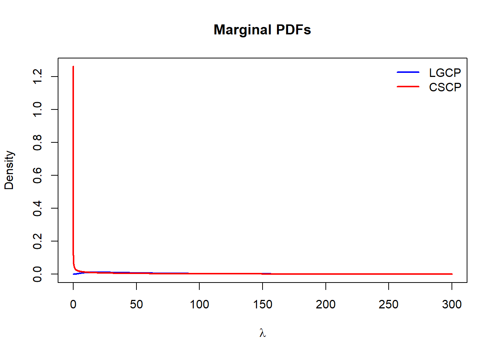
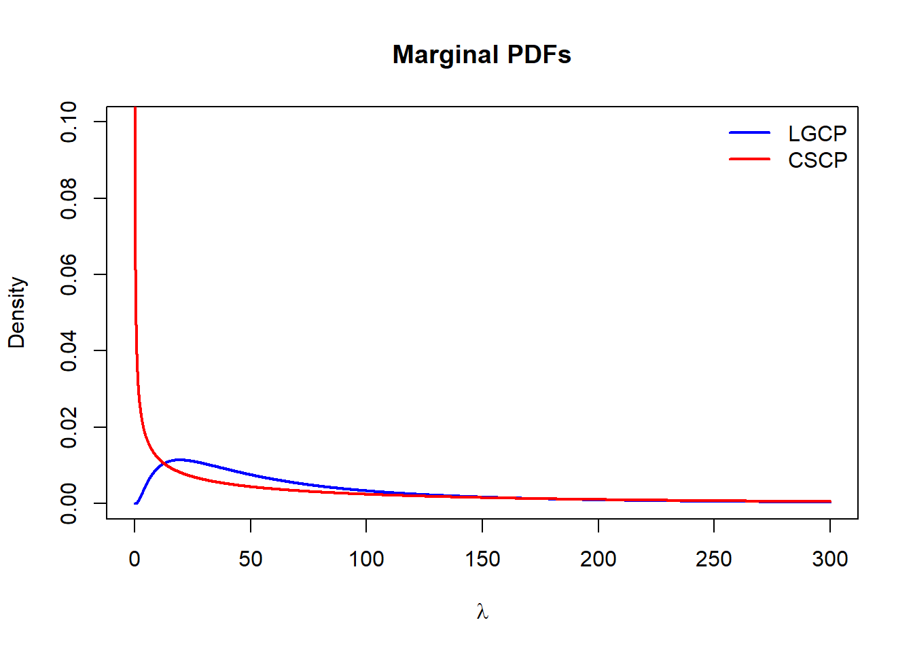
Varying phi:
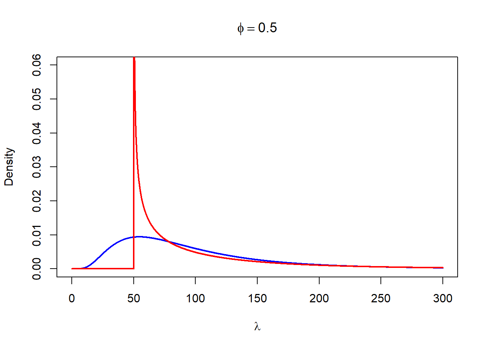
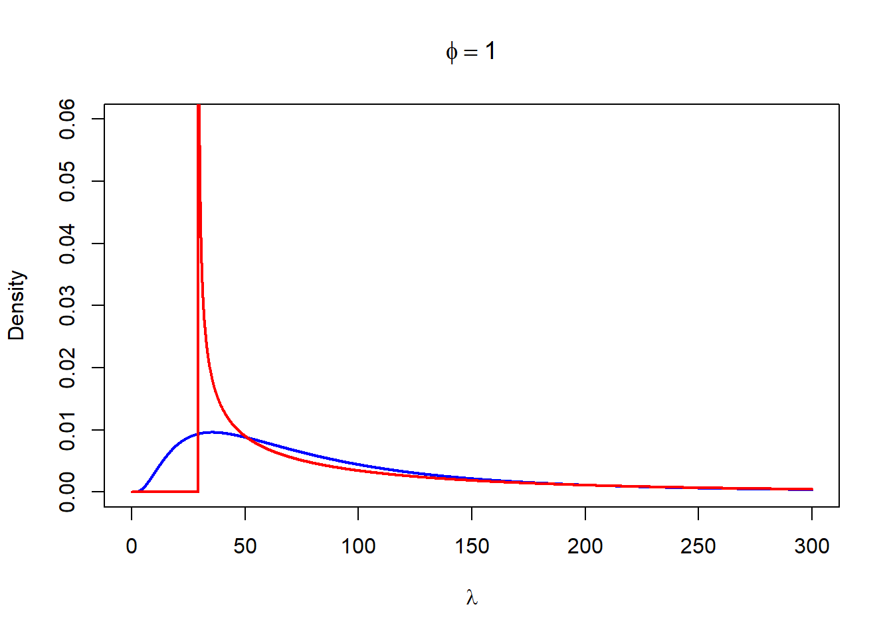
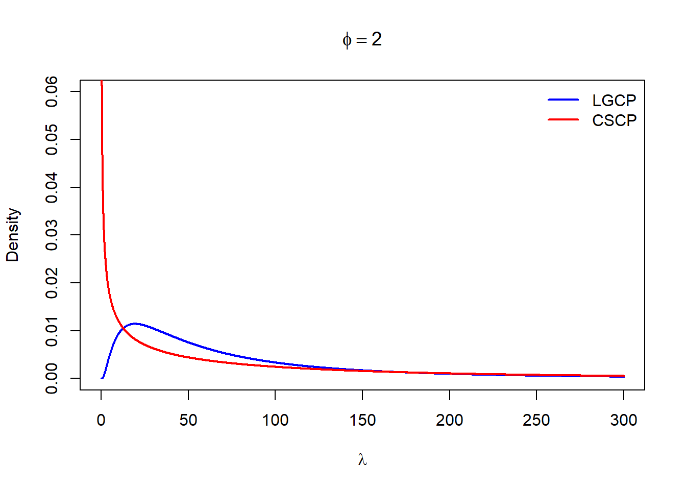
Vary lambda (phi = 2):
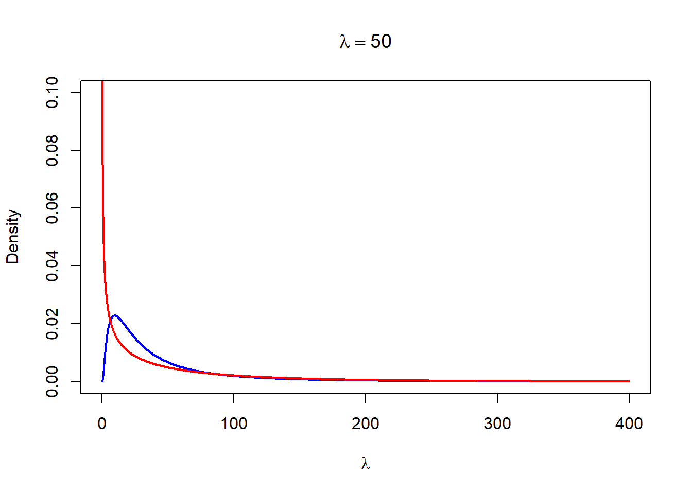
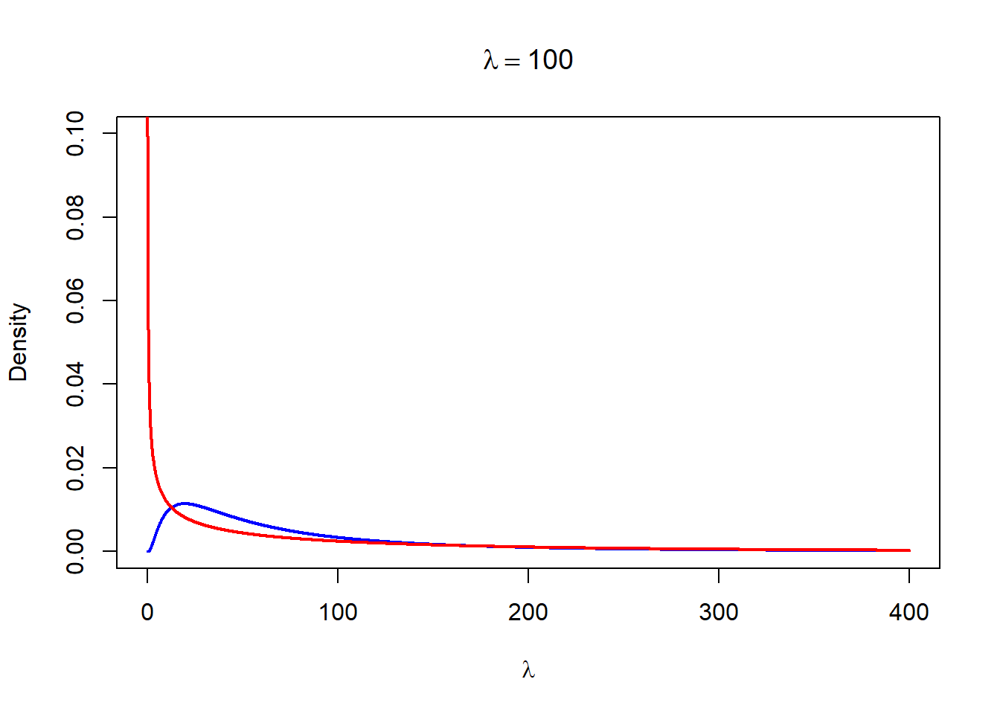
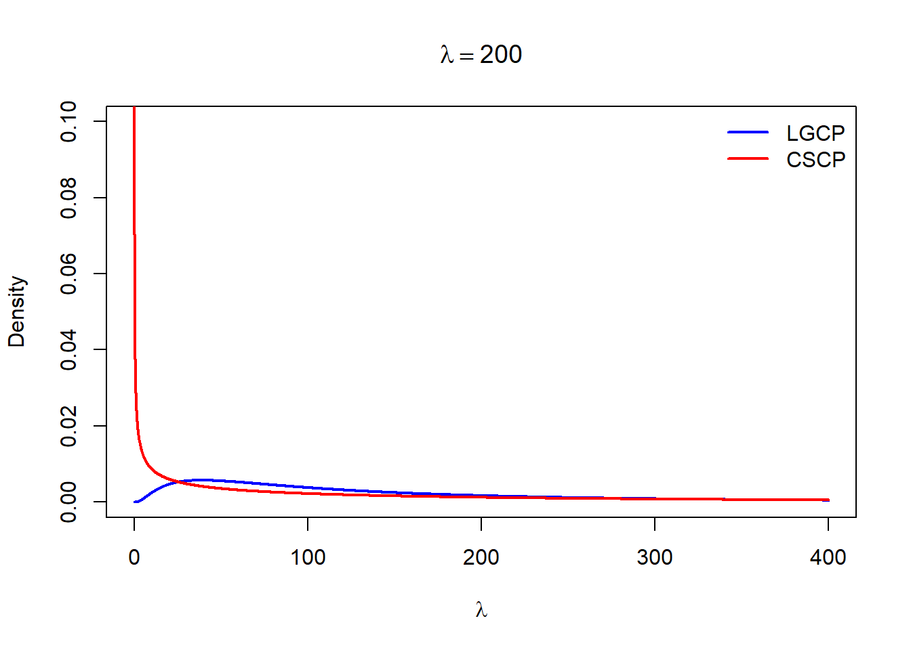
Vary lambda (phi = 0.1)
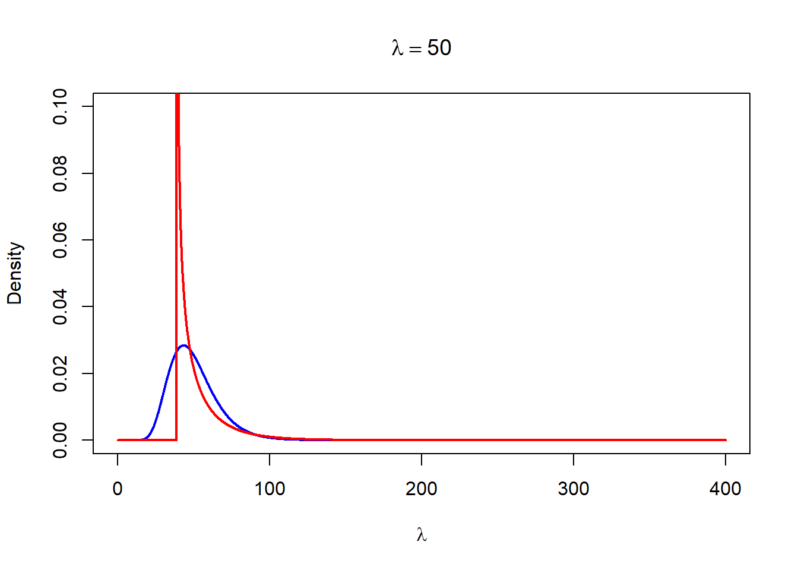
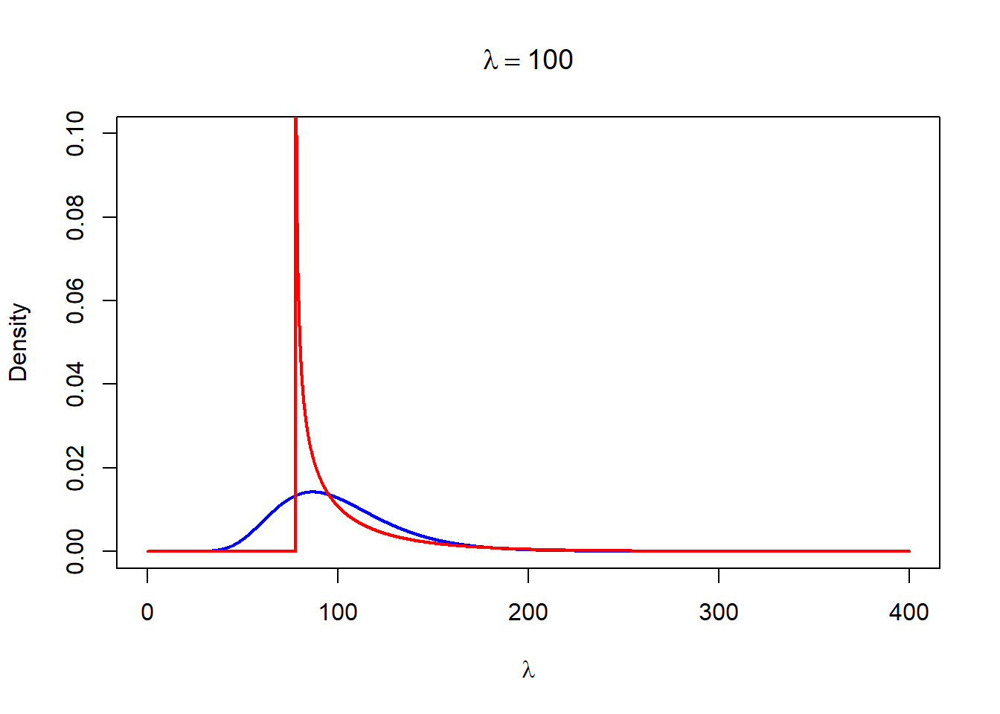
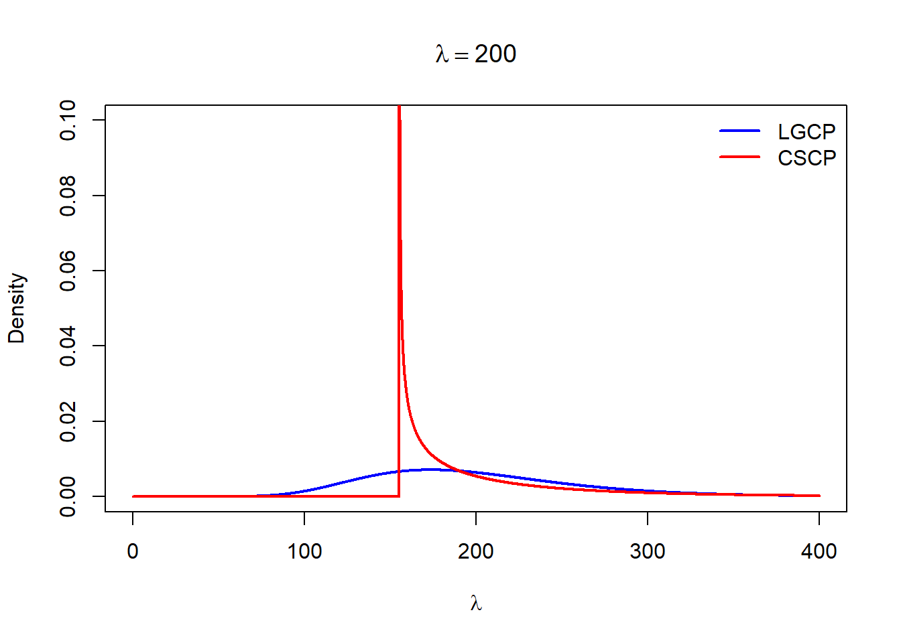
Zoom near the left boundary
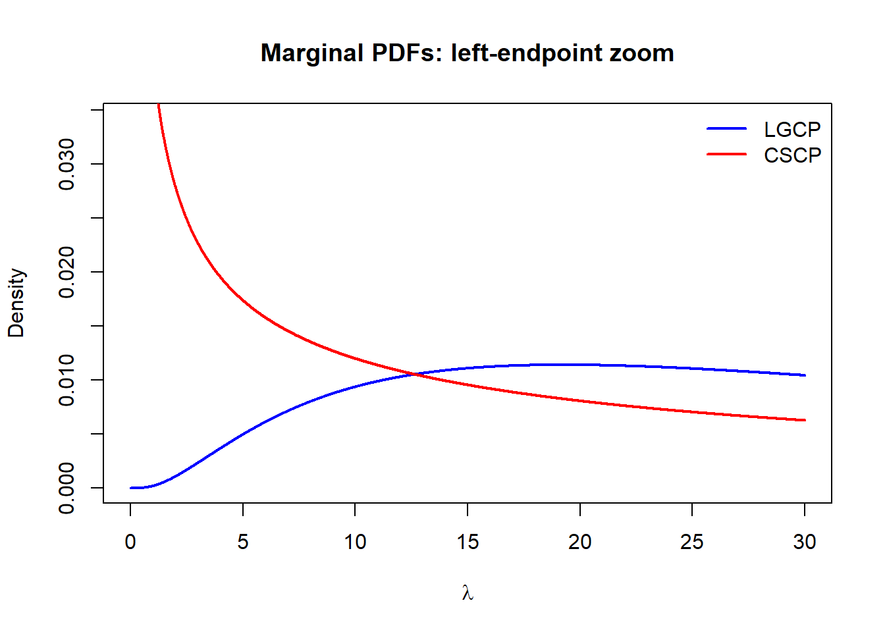
PDF with log-scaled y-axis
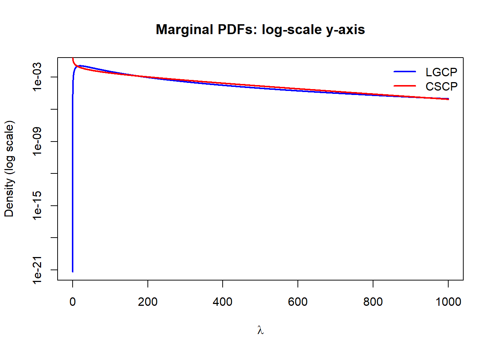
44.5.1 What are we seeing?
???
44.6 Maybe CDF is a little nicer?
Corresponding cumulative distribution functions follow immediately from the transformed representations used above.
Hopefully useful as: firstly, they provide a cumulative description of the one-point marginal laws. secondly, they will later allow us to investigate the upper-tail behaviour of the two models through their survival functions.
44.6.1 CDF of the CSCP marginal
Recall that under the shifted CSCP, \[ \Lambda(u) = \mu + Z(u)^2, \quad Z(u) \sim N(0, \sigma^2) \] and from the previous subsection we showed that
\[ \frac{\Lambda(u) - \mu}{\sigma^2} \sim \chi_1^2 \]
So for any \(\lambda > \mu\), we have
\[ F_{\Lambda(u)}(\lambda) = P(\Lambda(u) \le \lambda) \]
Using the transformation above, this becomes
\[ P(\Lambda(u) \le \lambda) = P\Big( \frac{\Lambda(u) - \mu}{\sigma^2} \le \frac{\lambda - \mu}{\sigma^2} \Big) \]
Since \[ \frac{\Lambda(u) - \mu}{\sigma^2} \sim \chi_1^2 \] it follows that
\[ F_{\Lambda(u)}(\lambda) = F_{\chi_1^2}\Big( \frac{\lambda - \mu}{\sigma^2} \Big), \quad \lambda > \mu \]
Also, since \(\Lambda(u) \ge \mu\) always, we have
\[ F_{\Lambda(u)}(\lambda) = 0, \quad \lambda \le \mu \]
So the full CDF is
\[ F_{\Lambda(u)}(\lambda) = \begin{cases} 0, & \lambda \le \mu, \\ F_{\chi_1^2}\Big( \frac{\lambda - \mu}{\sigma^2} \Big), & \lambda > \mu \end{cases} \]
So, at a fixed location \(u\), the marginal CDF of the CSCP is simply a shifted and scaled chi-square CDF.
44.6.2 CDF of the LGCP marginal
Now recall that under the LGCP, \[ \Lambda(u) = \exp(Z(u)), \quad Z(u) \sim N(\mu, \sigma^2) \]
From the previous subsection, we showed that
\[ \log \Lambda(u) \sim N(\mu, \sigma^2) \]
So for any \(\lambda > 0\), we have
\[ F_{\Lambda(u)}(\lambda) = P(\Lambda(u) \le \lambda) \]
Taking logs of both sides inside the probability gives
\[ P(\Lambda(u) \le \lambda) = P(\log \Lambda(u) \le \log \lambda) \]
But since \[ \log \Lambda(u) \sim N(\mu, \sigma^2) \] this becomes
\[ F_{\Lambda(u)}(\lambda) = P(Z(u) \le \log \lambda) \]
Now standardising,
\[ P(Z(u) \le \log \lambda) = P\Big( \frac{Z(u)-\mu}{\sigma} \le \frac{\log \lambda - \mu}{\sigma} \Big) \]
Since \[ \frac{Z(u)-\mu}{\sigma} \sim N(0,1) \]
it follows that
\[ F_{\Lambda(u)}(\lambda) = \Phi\Big( \frac{\log \lambda - \mu}{\sigma} \Big), \quad \lambda > 0 \]
where \(\Phi\) is the standard normal CDF.
Also, since \(\Lambda(u) = \exp(Z(u)) > 0\) always, we have
\[ F_{\Lambda(u)}(\lambda) = 0, \quad \lambda \le 0 \]
So the full CDF is
\[ F_{\Lambda(u)}(\lambda) = \begin{cases} 0, & \lambda \le 0 \\ \Phi\Big( \frac{\log \lambda - \mu}{\sigma} \Big), & \lambda > 0 \end{cases} \]
So, at a fixed location \(u\), the marginal CDF of the LGCP is the CDF of a lognormal random variable.
44.6.3 Comparison
While the CSCP and LGCP can exhibit very similar second-order structure, their one-point marginal cumulative distributions are fundamentally different (although how different, I feel is not very much).
In particular:
the CSCP marginal CDF is that of a shifted and scaled chi-square random variable
the LGCP marginal CDF is that of a lognormal random variable
44.6.4 Marginal survival functions
Since we are especially interested in how the two marginals differ in their upper tails, it is natural to also consider the survival functions,
\[ \bar F_{\Lambda(u)}(\lambda) = 1 - F_{\Lambda(u)}(\lambda) \]
For the CSCP, this gives
\[ \bar F_{\Lambda(u)}(\lambda) = \begin{cases} 1, & \lambda \le \mu \\ 1 - F_{\chi_1^2}\Big( \frac{\lambda - \mu}{\sigma^2} \Big), & \lambda > \mu \end{cases} \]
and for the LGCP,
\[ \bar F_{\Lambda(u)}(\lambda) = \begin{cases} 1, & \lambda \le 0 \\ 1 - \Phi\Big( \frac{\log \lambda - \mu}{\sigma} \Big), & \lambda > 0 \end{cases} \]
44.7 Plotting the CDFs
Standard CDF
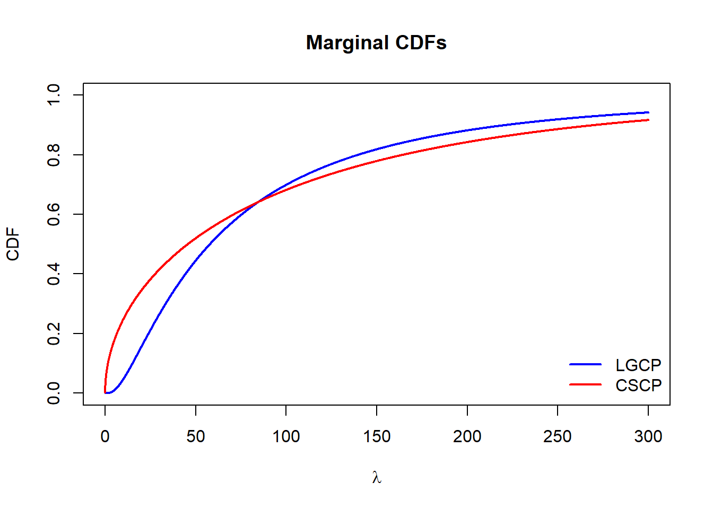
Varying phi
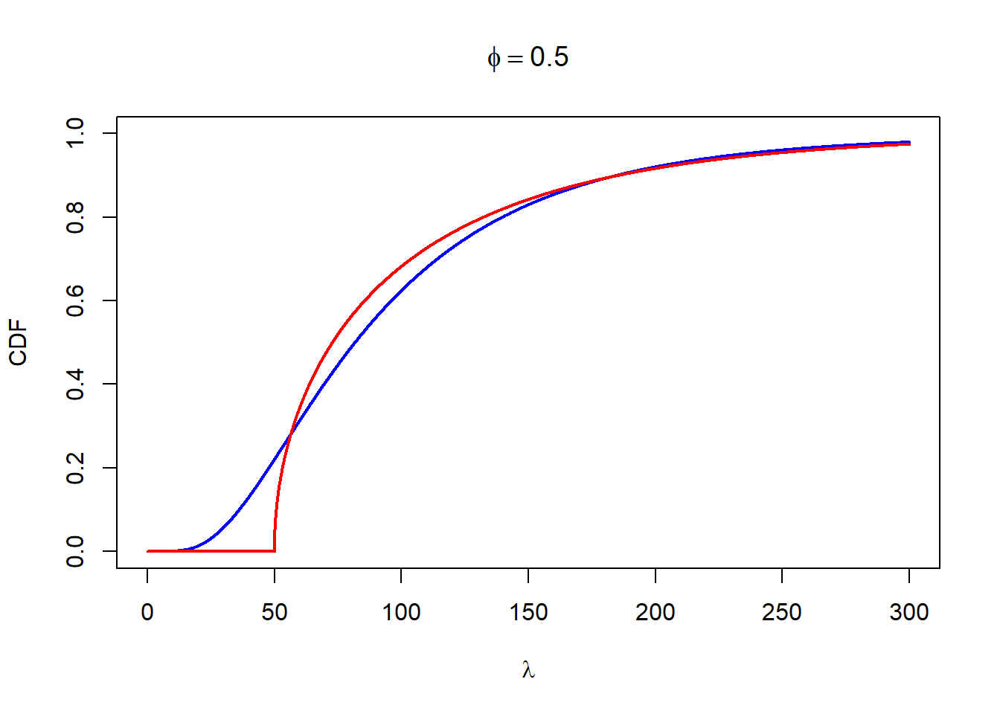
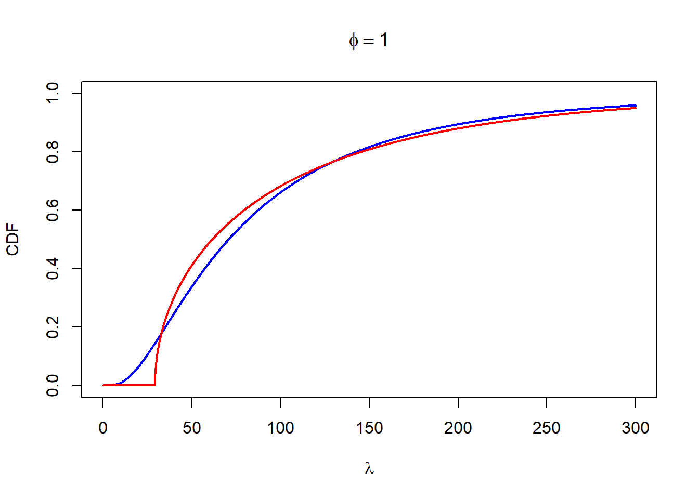
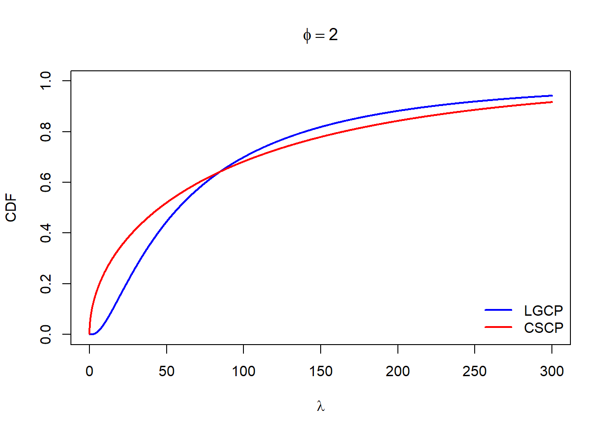
Left-endpoint zoom
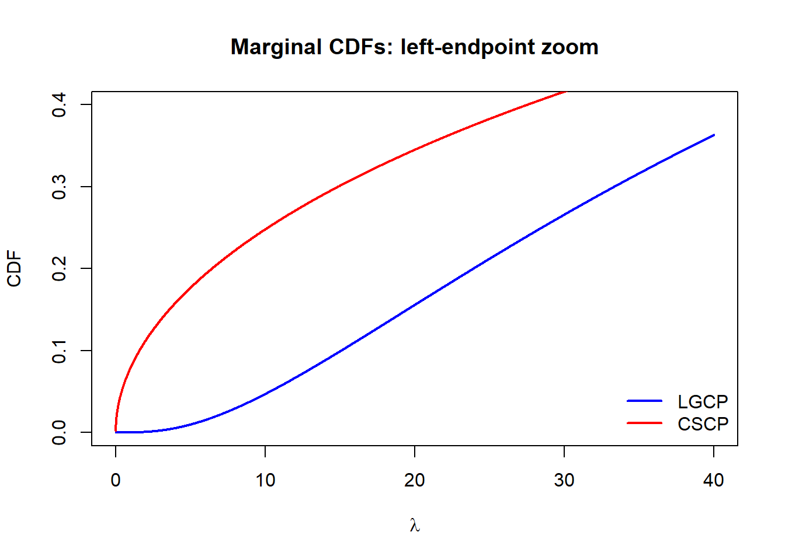
And survival plots I guess?
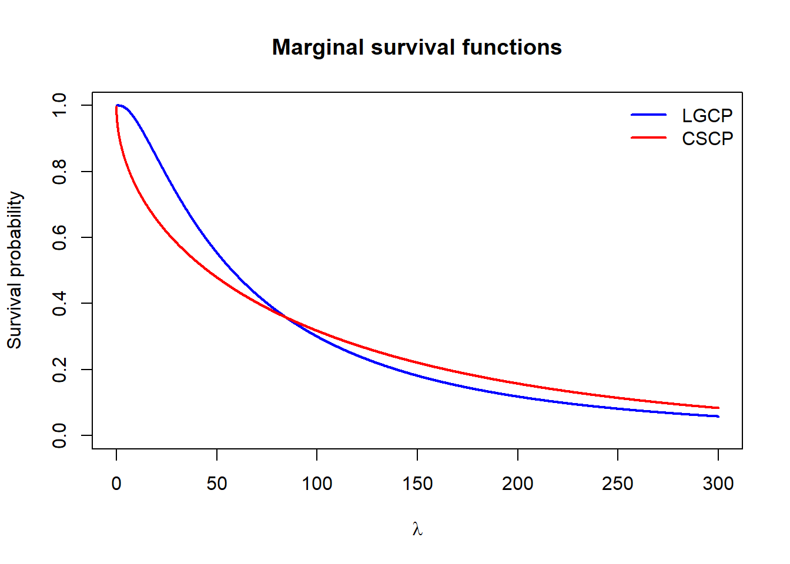
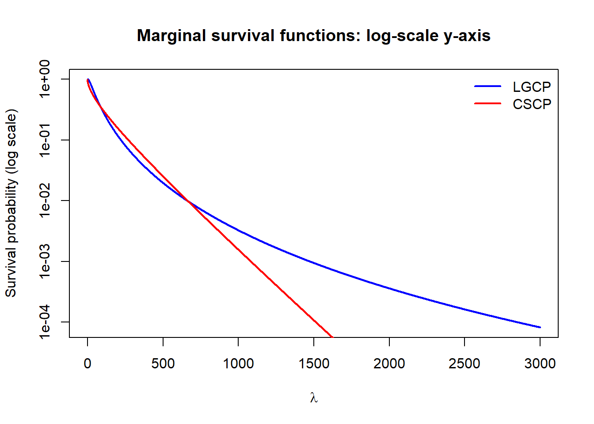
Varying phi:
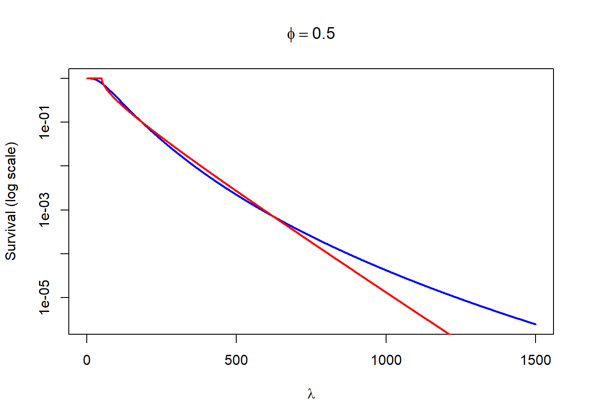
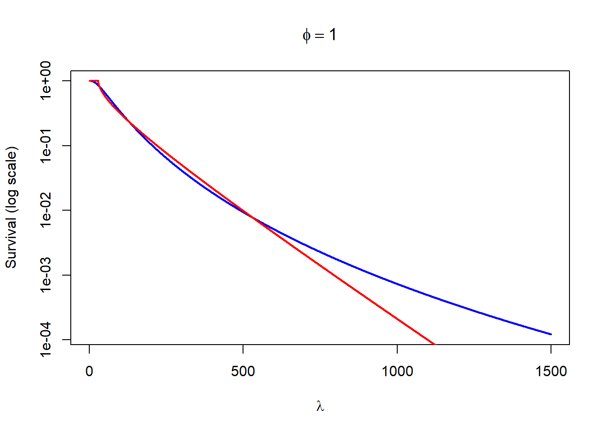
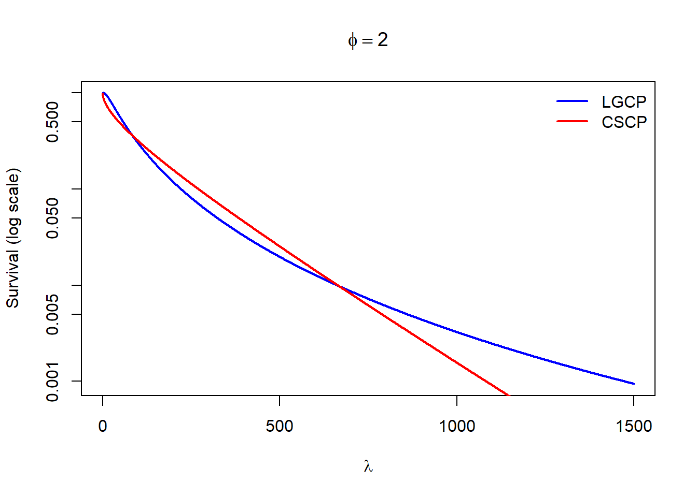
44.8 Relative scale plot
Relative scale survival plot
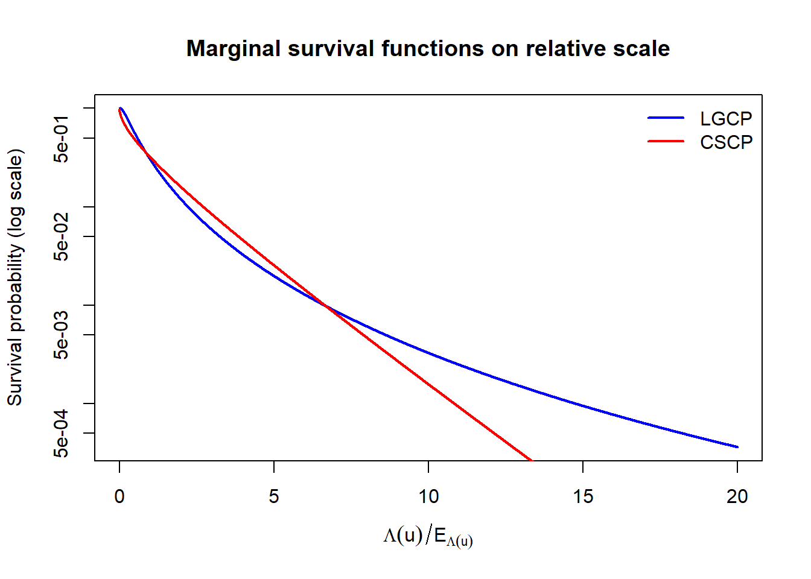
Relative-scale PDF
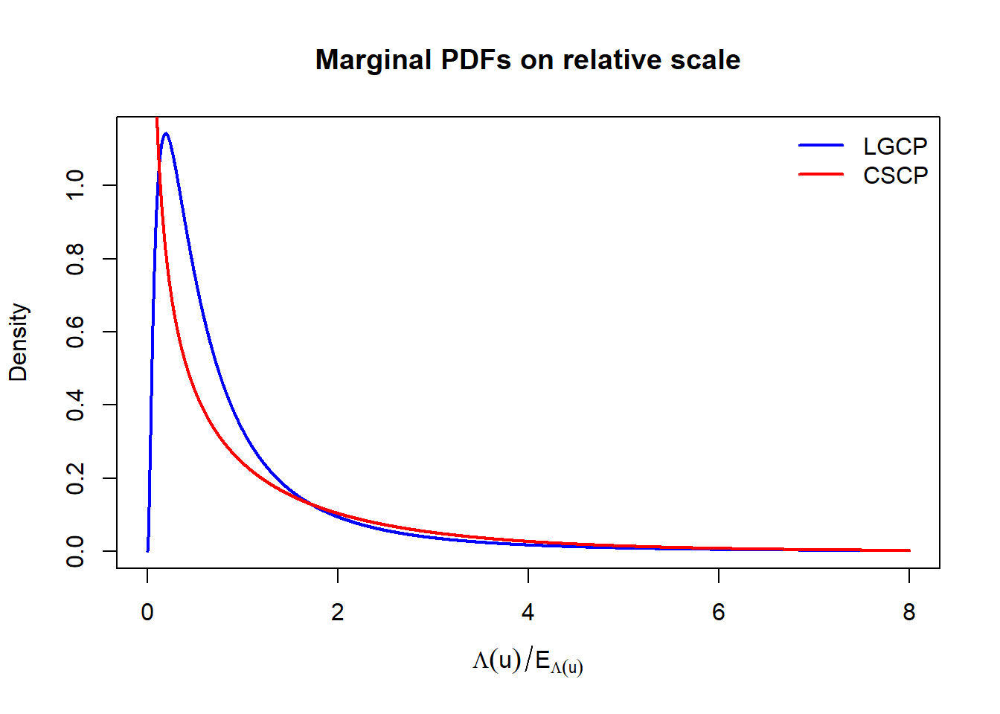
44.9 Quantiles table
probs <- c(0.90, 0.95, 0.99, 0.999, 0.9999)
q_lgcp <- qlnorm(probs, meanlog = mu_log, sdlog = sigma_log)
q_cscp <- mu_cscp + sigma2_cscp * qchisq(probs, df = 1)
quantile_tab <- data.frame(
prob = probs,
LGCP = q_lgcp,
CSCP = q_cscp,
LGCP_over_mean = q_lgcp / lambda,
CSCP_over_mean = q_cscp / lambda
)
print(quantile_tab, row.names = FALSE) prob LGCP CSCP LGCP_over_mean CSCP_over_mean
0.9000 221.2113 270.5543 2.212113 2.705543
0.9500 323.7309 384.1459 3.237309 3.841459
0.9900 661.3074 663.4897 6.613074 6.634897
0.9990 1472.7431 1082.7566 14.727431 10.827566
0.9999 2846.7700 1513.6705 28.467700 15.13670544.10 Tail ratio plot
rel_grid <- seq(0.5, 20, length.out = 10000)
x_abs <- lambda * rel_grid
S_lgcp <- s_lgcp_marginal(x_abs, mu_log = mu_log, sigma_log = sigma_log)
S_cscp <- s_cscp_marginal(x_abs, mu = mu_cscp, sigma2 = sigma2_cscp)
tail_ratio <- S_lgcp / S_cscp
tail_ratio[!is.finite(tail_ratio)] <- NA
plot(
rel_grid, tail_ratio,
type = "l",
lwd = 2,
col = "black",
log = "y",
xlab = expression(Lambda(u) / E[Lambda(u)]),
ylab = "LGCP survival / CSCP survival",
main = "Relative tail probability ratio"
)
abline(h = 1, lty = 2)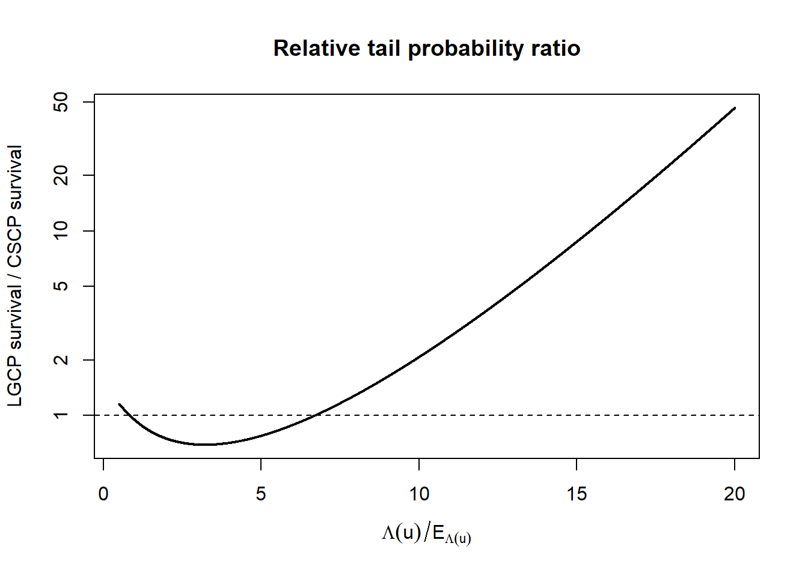
ratio > 1: LGCP has heavier upper tail there ratio < 1: CSCP heavier there
44.11 Final Verdict
So what we thinking??
The two models are nearly indistinguishable across the majority of the distribution, and only diverge in the extreme tail corresponding to intensities exceeding approximately 10–15 times the mean. Not promising at ALL.